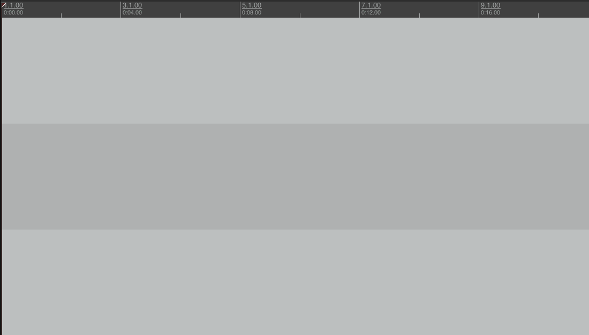
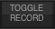
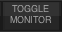
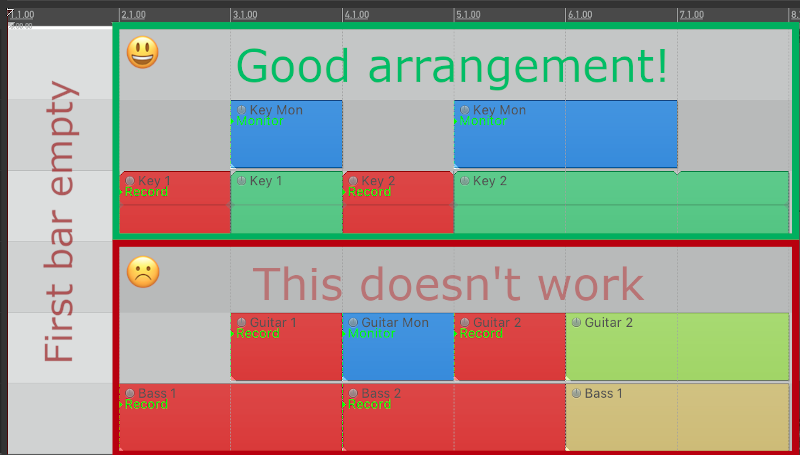
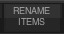
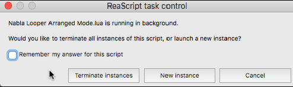

Nabla-fork
Arranged Guide [en]
Get started with Arranged Mode
What can you do with Arranged Mode?
The Arranged Mode is designed to create live looping sessions and perform completely hands-free, that is, without the use of external triggers to start/stop a loop recording section, although it can also be a useful tool to speed up the loop-based music production.
The concept is quite simple, the Audio or MIDI recorded in a “Record Item” named “Loop 1”, will be propagated to all the “Playback Items” named “Loop 1” any where in the project (it can be any other name).

Each “Playback Item” can have specific properties and settings, such as volume, pan or pitch automations, reverse mode, as well as specific effect chains, additionally, being able to create automations of effects and parameters of each track. In this way, it is possible to create more complex sessions than in a traditional looping system.

Creating an arrangement:
- Item Types
- Item Creation
- Organizing Tracks
- Running Nabla Looper
- Takes System
- Clear items
- Practice mode
Item Types
Nabla Looper responds to four item types:
-
Record: Defines a recording section. During its length, the recording and monitoring of the track will be active.
-
On the toolbar: 
-
In action list: “Script: Nabla Looper Arranged Items (Toggle Record) .lua”
-
Item Color:
-
Take Marker: Record
-
-
Record Mute: Just like the previous item, but during this section, the track will be in the “Mute” state. This is useful when we use external monitoring and only the audio of the playback items is needed.
-
Not present in toolbar.
-
In action list: “Script: Nabla Looper Arranged Items (Toggle Record Mute) .lua”
-
Item Color:
-
Take Marker: Rec Mute
-
-
Monitor: Defines a section to activate the monitoring of a track.
-
In toolbar: 
-
In action list: “Script: Nabla Looper Arranged Items (Toggle Monitor) .lua”
-
Item Color:

-
Take Marker: Monitor
-
-
Playback (normal): This is the default state when creating an item.
-
Any of the above actions or buttons can return an item to its normal or playback state.
-
Item color: The color of the track or the item color predefined in the REAPER settings.
-
No Take Marker.
-
Item Creation
Notes:
Before you start creating an arrangement, it’s important to consider the following:
The first Record/Monitor Item, must begin at least on the second bar.
There cannot be contiguous Record/Monitor Items in the same track, the solution to this is explained in the “Organizing Tracks” section.

-
Create a track.
-
Click on an empty area in the “Arrange” view.
-
Hold down the ctrl or cmd key, and drag to draw an item of the desired lenght.
-
Select this new item and rename it.
-
- You can use the rename tool that is installed with Nabla Looper, in the toolbar:  or assign a shortcut to “Script: Nabla Looper Arranged Items (Rename) .lua” in the action list.
-
Set the item type with the buttons or actions seen before.
-
Duplicate this item and toggle it to “Playback” type or create a new one with the same name, adjust its size and distribute it in your arrangement. You can create as many “Playback Items” as necessary, even place them on other tracks.

Organizing Tracks
In the previous example, we showed the simplest structure of a track with Record/Playback Items. To create a more complex arrangement, we need a folder-based track structure, for each of the Audio or MIDI input to be used.
In the track folder, we will insert the effects chain or virtual instruments, while the “children” tracks, will be containers for Record/Monitor/Playback items. The audio or MIDI of these nested tracks, will pass through the effects that we have inserted in the parent folder.
Creating a track template:
-
Create two or more tracks.
-
Shift-click to select the tracks that will be the “children”, drag them to the track that will be the Folder.
-
The lower tracks will shift slightly to the right, denoting that they are now “children”.
-
The parent track becomes the “bus” through which the signal of the nested tracks will flow.
-
-
Insert your effects chain in the parent track.
-
Set the same audio or midi input for the nested tracks.
-
Create an arrangement and repeat the process for each of the VSTi’s or Audio Effects to be used.
In the Audio “children” tracks, you can insert additional effects and adjust the volume and pan parameters, this way with a single audio line you can create very elaborate arrangements.
MIDI “children” tracks are only containers and any adjustments or automation must be done in the main track.

Running Nabla Looper
To start the session, press the “Arranged Mode” button or assign a shortcut to “Script: Nabla Looper Arranged Mode.lua” in the action list.
If the project has not yet been saved, you will be prompted to do so. After saving, run “Arranged Mode” again.
Playback will start and the actions that you have defined in your arrangement with the different item types, will be automatically executed.
To stop the session, press the “Arranged Mode” button again or press the assigned shortcut. The first time you do this, a window will be displayed, in which you must check the option “Remember my answer for this script” and click on “Terminate instances “ (you can also stop Nabla with the stop button on the REAPER transport bar).

Takes System
Each time a section is recorded, a new take will be created and shown by adding the string “TK: ##” at the end of the name.
To manage these Takes, you must assign shortcuts to one of the following scripts in the action list:
-
Switch Take: Select between the takes associated with an item. The available scripts are:
-
Script: Nabla Looper Arranged Takes (Switch Take - Item under mouse) .lua
-
Script: Nabla Looper Arranged Takes (Switch Take - Selected item) .lua
-
-
Delete Take: Deletes a take from the list and its associated file on the hard drive. Use with caution! There is no undo point for this action. The available scripts are:
-
Script: Nabla Looper Arranged Takes (Delete Take no prompting - Item under mouse) .lua
-
Script: Nabla Looper Arranged Takes (Delete Take no prompting - Selected item) .lua
-
Script: Nabla Looper Arranged Takes (Delete Take - Item under mouse) .lua
-
Script: Nabla Looper Arranged Takes (Delete Take - Selected item) .lua
-
It is recommended to eliminate the Takes that are not used and leave only one or two for reference, this way, your projects will be very light-weight and you will not waste hard drive space.

Clear items
Before starting a new recording, you can clear the items, so that the active take is not played: Use the button “Clear Items” or assign a shortcut to “Script: Nabla Looper Arranged Items (Clear) .lua” in the action list (this does not delete the Take, it merely hides it).
The items that will be cleared are those that have an associated “Record Item”.
A good practice when building your session, is to record just one section until you have a good take, remove the unsuitable ones, return the item to “Playback” type, and then add another section and repeat the process.

Practice mode
In practice mode, when you stop the session, the takes will be automatically deleted and the items will be cleared.
You can activate the practice mode in the Arranged Mode settings, by checking the “Practice Mode” option.